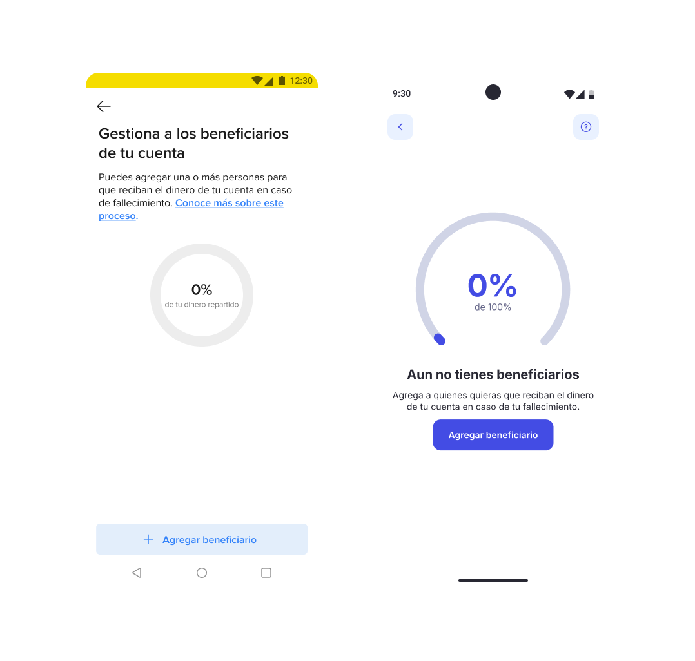
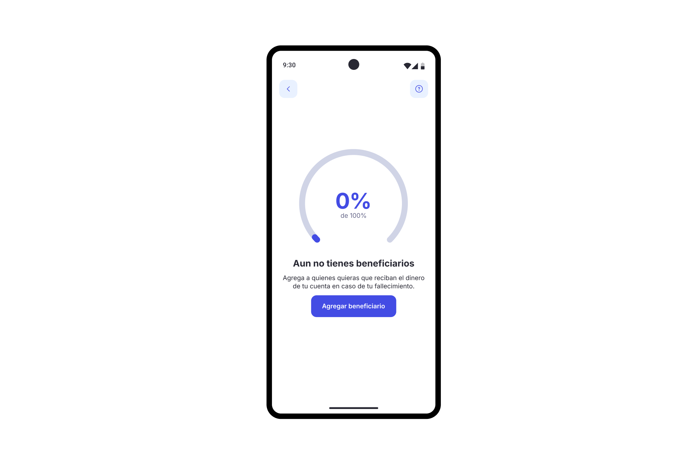
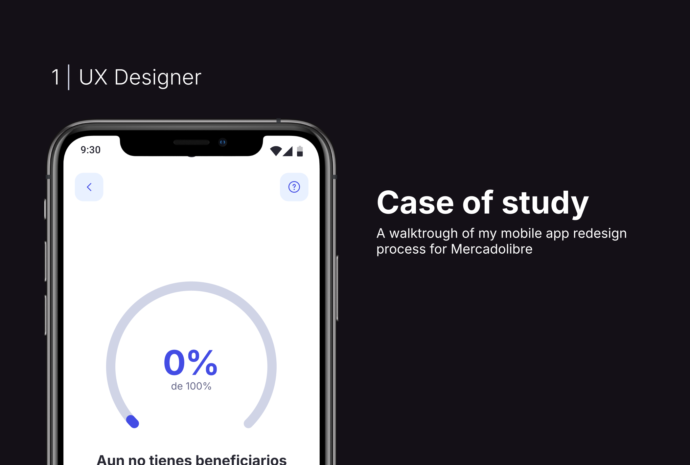

Securing Digital Assets Post-Life
Designing the end-to-end beneficiary flow for a fintech platform — enabling users to plan and distribute their digital assets in case of death.

The challenge
Users of the platform had no way to plan what happens to their digital financial assets after they pass away. Existing solutions were either overly legal, complex, or simply nonexistent in the fintech space.
The challenge was to create a flow that handles an emotionally sensitive topic — death and money — with clarity, empathy, and simplicity. Users needed to assign beneficiaries and distribute percentages of their account, all within a mobile-first experience.
How might we help users plan the distribution of their digital assets in a way that feels simple, safe, and human?
Discovery & research
I started with desk research on digital estate planning regulations in Latin America, followed by qualitative interviews with 12 potential users to understand their mental models around financial planning post-life.
Key insights
- Most users had never thought about what happens to their fintech accounts after death
- The concept of "beneficiaries" was familiar from traditional banking but felt intimidating
- Users wanted a quick setup process — not a lengthy legal procedure
- Transparency about what data is shared with beneficiaries was critical for trust

Before (Android legacy) vs. After (redesigned experience)
Design process
Working closely with the product and legal teams, I mapped the end-to-end flow from entry point to confirmation. The design process went through several iterations:
1. Information Architecture
I restructured the flow into three clear steps: onboarding (explaining the concept), adding beneficiaries (personal data + percentage), and confirmation (review and submit). This reduced the cognitive load significantly compared to the original linear form.
2. Emotional Design
The entry point uses warm, human imagery and reassuring copy ("Tu patrimonio en las manos de los más cercanos") instead of cold financial language. Empty states show progress indicators to motivate completion.
3. Progressive Disclosure
Instead of showing all required fields at once, the form reveals information progressively. Users first see only the essential fields (name, relationship), with additional details appearing contextually.

Empty state — zero beneficiaries with clear call to action

Results & impact
The redesigned beneficiary flow was shipped to production on both Android and iOS. Key outcomes:
- Reduced the setup flow from 8 steps to 3 clear stages
- Usability testing showed a task completion rate of 92% (up from 64%)
- Average setup time decreased from 4+ minutes to under 2 minutes
- Positive qualitative feedback on the emotional tone and clarity
Key learnings
Designing for sensitive topics requires more than good UI — it demands empathy in every micro-decision, from copy to color to timing. Working with legal constraints taught me to find creative solutions within rigid frameworks.
This project reinforced my belief that the best UX work happens when you deeply understand the emotional context of the user, not just their task flow.